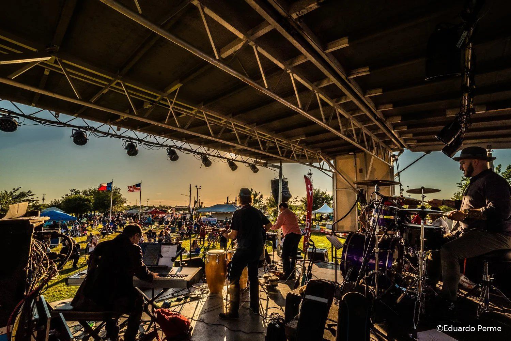
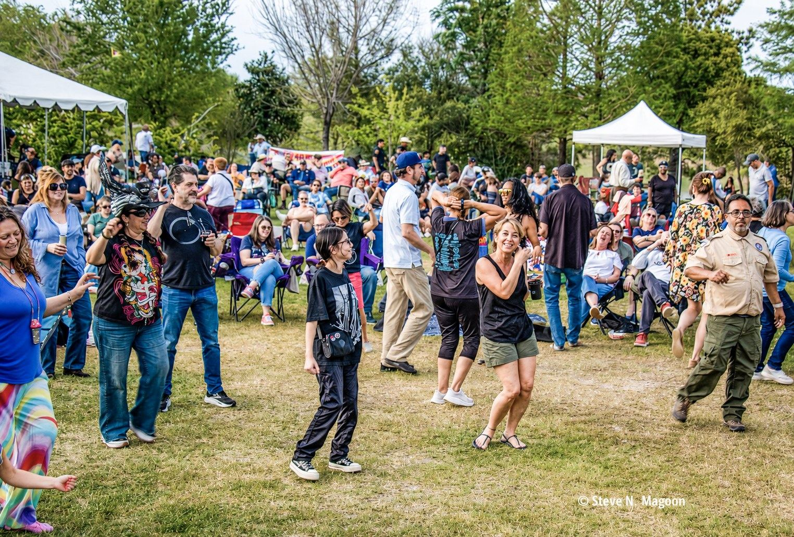

More than a decade of free music at Willow Waterhole.
Since 2012, MusicFest and related events have brought free live music to Willow Waterhole, bringing together neighbors, families, students, artists, volunteers, sponsors and community partners.
We know what it takes to put on the show.
Over the years, the team behind Levitt Houston has built practical experience across every part of a free outdoor concert.
- Talent booking
- Stage and production
- Vendors, food and beverage
- Parking and site logistics
- Permits
- Volunteers
- Local sponsorship and fundraising
- Student musicians
- Community partnerships
The posters
A look back at MusicFest through the posters that announced it.



From one big day to a season of free music.
MusicFest proved the audience and built the experience. The next step is a recurring Levitt concert series that grows the audience, sponsors, donors and rhythm of free music at Willow Waterhole, show by show.